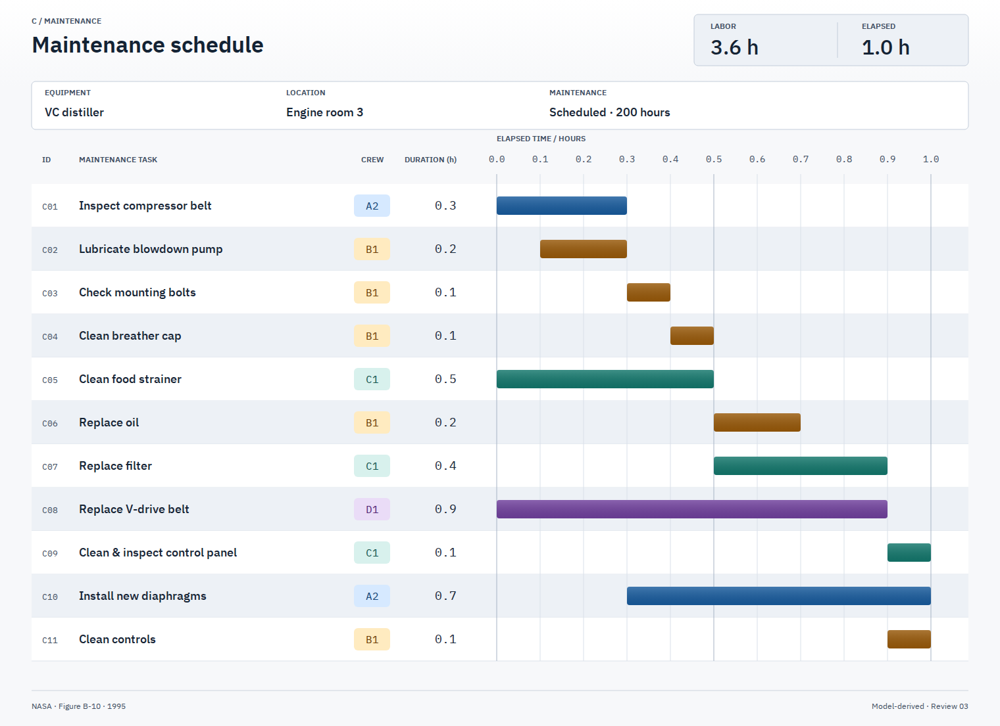
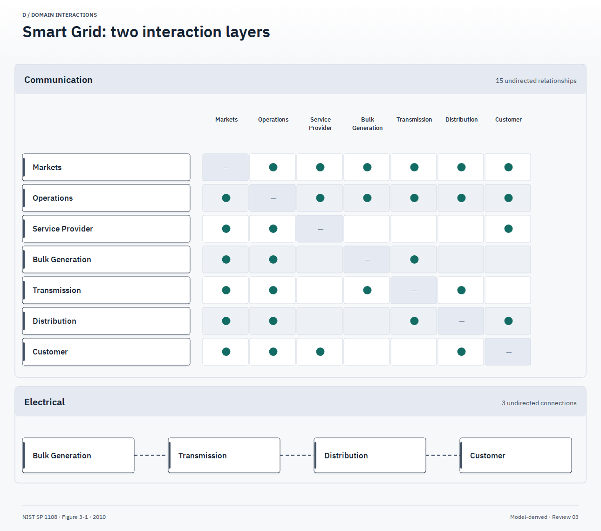
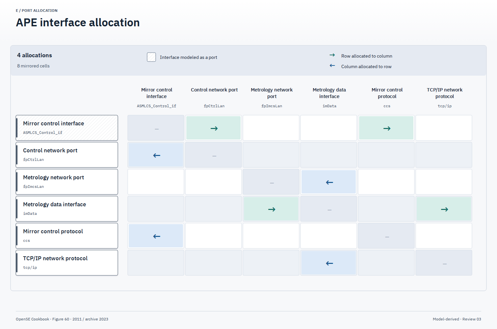

Three attributed, bounded derivatives. Existing diagram pixels are retained; no fresh browser or human visual qualification was performed for this release. A/B remain held pending rights review. Scope and checks · Source and font notices · Release status
11 tasks; 3.6 task-hours and 1.0 hour elapsed. Crew codes and chart-reading precision remain explicit.

SVG · PNG · Editable geometry · Scoped model · View mapping · Derivative fact ledger
15 undirected communication relationships and three undirected electrical connections. Source wording does not prove security.

SVG · PNG · Editable geometry · Scoped model · View mapping · Derivative fact ledger
Six endpoint identities and four directed allocations from the Apache-licensed model archive. Interface/port projection limits remain explicit.

SVG · PNG · Editable geometry · Scoped model · View mapping · Derivative fact ledger